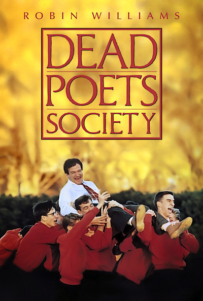
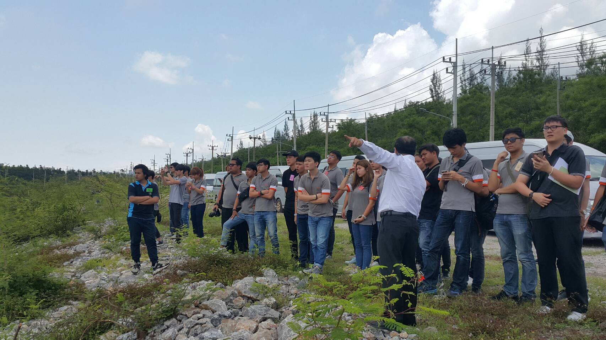

รีวิวหนัง Dead Poet Society
ประเด็นที่น่าสนใจในเรื่องก็คงหนีไม่พ้น การสอนของครูคิตตี้ ที่ไม่เน้นสอนตามตำรา นั่งเรียนในห้อง แต่พาออกไปเข้าใจมุมมองของนักแต่งกวี ผ่านกิจกรรมต่างๆ ซึ่งเราเห็นด้วยบางส่วน ถ้าอยากได้ผลแบบ เด็กเข้าใจวิธีคิดมุมมองนักอ่าน การพาเด็กไปให้ถึงมุมมองนั้นที่ไม่ใช่แค่นั่งในห้องแล้วอ่าน เราคิดว่ายากมากแต่ก็ไม่ใช่ว่าทำไม่ได้ ซึ่งเราว่าก็วิธีเดิมๆ ก็ไม่ได้ผิด วิธีใหม่ก็ไม่ได้ผิด ขอแค่ได้ผลตามที่วางไว้ก็พอ แต่อาจจะมาแข่งกันที่เวลาในการพาเด็กไปให้ถึง กับต้นทุนต่างๆ ในการเรียน แต่ที่น่าสงสารคือวิธีสอนมันแปลกสำหรับคนอื่นๆ ก็ไม่แปลกที่คนอื่นจะไม่ชอบ อาจจะต้องพิสูจน์ให้คนอื่นเห็นระดับนึงไปด้วย ชอบเรื่อง seize the day ดูแล้วรู้สึกหึกเหิมอยากไปบอกรักคนที่ชอบเลย แต่ก็นั่นมันในหนัง เราไม่แน่ใจว่าทั้งเรื่องอยากจะสื่ออะไร แต่เดาว่าแค่อยากบอกวัยรุ่นว่า ใช้ชีวิตให้คุ้มให้สมกับเป็นวัยรุ่นหน่อยแค่นั้น
รีวิวไปเที่ยวโรงไฟฟ้าแม่เมาะ
พอดีมีโอกาสไปดูงานมา เลยมาเล่าให้ฟังเนอะ บอกไว้ก่อนนะจ๊ะว่าอันนี้ฟังมาจากทางโรงไฟฟ้าล้วนๆ ยังไม่ได้ฟังจากอีกด้าน ดังนั้นฟังหูไว้หูนะจ๊ะ แถมให้พาร์ทเกริ่น ถ้าถามว่าไฟฟ้าจำเป็นมั้ย คงนึกภาพกันออกเนอะ ตอนนี้เราผลิตไฟฟ้าเนี้ยไม่ได้เสกมาเองทั้งหมดนะครับ มันมีที่มา กฟผ ผลิตเอง ซื้อมาจากเอกชน ซื้อมาจากลาวอีกส่วนนึง โดยแหล่งเชื้อเพลิงหลักๆ ตอนนี้คือ แก๊ซธรรมชาติที่อ่าวไทย รองลงมาก็ถ่านหิน แปลว่าถ้าวันใดวันนึงเรามีปัญหากับประเทศเหล่านี้เค้าใจร้ายไม่ขายไฟฟ้าให้เรา ไฟฟ้าในส่วนนั้นก็จะหายไปเนอะ และเราก็อาจจะไม่มีไฟพอใช้ แล้วก็คิดต่อเองว่าจะเกิดอะไรขึ้นบ้าง ตอนนี้ที่ไทยก็มีพลังงานทางเลือกอื่นๆ อยู่เช่นกันทั้งแสงอาทิตย์และลม แต่ที่ไม่บูมก็เพราะ solar cell ต้นทุนมันสูง กังหันลมบ้านเราลมไม่ได้รุนแรงเท่าไหร่ หรืออย่างพวก biomass ก็มีปริมาณไม่ได้มากพอที่จะทำในเชิงอุตสาหกรรมได้ ยิ่งนิวเคลียร์นี่... ก็น่าจะรู้กันนะครับ มาที่ส่วนแรกการทำงาน ถ้าอธิบายง่ายๆ เค้าเอาความร้อนที่ได้จากถ่านหินที่เค้าขุดมาไปต้มน้ำ พอน้ำกลายเป็นไอ ก็เอาไอไปปั่นใบพัดหรือเรียกว่า turbine ไอเจ้า turbine ก็เชื่อมอยู่กับแหล่งกำเนิดไฟฟ้า (generator) พอใบพัดหมุน generator ก็หมุนตามไปทำให้ไฟฟ้าเนอะ แต่ความสนุกมันอยู่ในรายละเอียดขอเล่าเป็นอีก 3 ส่วนย่อยคือช่วงขุดถ่านหิน ช่วงผลิตไฟฟ้าจากถ่านหิน และช่วงกำจัดของเสีย(ซึ่งตรงนี้นี่แหละดราม่า) ช่วงขุดถ่านหิน- ช่วงนี้โคตรว้าว ก่อนที่จะขุดได้ เค้าไม่ได้มาเล่นๆ นะครับ เค้าต้องสำรวจก่อนว่าพื้นที่ตรงไหนที่ผ่านหินบ้าง แล้วถ้ามีมันคุ้มค่ามั้ยที่เค้าจะขุด คุ้มค่าดูยังไง- คือถ้าขุดมาแล้วทำกำไรแบบที่ยอมรับได้และให้ไฟฟ้าเพียงพอก็ขุด แต่จริงๆ ก็มีอีกหลายปัจจัยที่เค้าคำนึง พอเค้าได้บริเวณที่ถ่านหินเยอะแล้วเค้าก็ลงพื้นที่เก็บข้อมูลว่าสภาพแวดล้อมเป็นยังไง การวางตัวชั้นถ่านหินเป็นยังไง ควรจะขุดยังไง ปีนึงควรขุดให้ได้มากแค่ไหน เราจะขุดมันได้กี่ปี ฝนตกจะทำไง ก็พิจารณากันไป พอคิดว่ามันคุ้มก็จัดเลย ขั้นตอนก็ง่ายๆ ขุดแล้วเอาถ่านหินขนใส่รถยักษ์ส่งต่อให้สายพานส่งไปยังเครื่องโม้ที่นี่ก็ได้ถ่านหินที่พร้อมจะต้มน้ำ ช่วงโรงไฟฟ้า- อันนี้ก็พีค มองไกลๆ ก็ธรรมดาไม่ใหญ่ พอไปยืนบนชั้นบนสุดก็หวิวๆ เลย 5555 เค้าจะเอาถ่านหินมาบดแล้วจ่ายลงที่ให้ความร้อนเรียกว่าอะไรนั้นลืมชื่อ แล้วใช้น้ำมันเป็นตัวจุดไฟ ความร้อนมันก็จะต้มน้ำใน boiler ให้กลายเป็นไอและไอน้ำก็จะวิ่งไปพลักใบพัดให้หมุนผลิตไฟฟ้าออกมาอย่างที่บอก แต่ความเจ๋งมันคือการทำให้แรงดันมันเพิ่ม ตาม phase diagram หรือ PV=nRT ก็ได้ การทำแรงดันให้เพิ่มขึ้นคือการลดปริมาตรไม่ก็เพิ่มความร้อนเนอะ เรื่องเพิ่มความร้อนก็สบายๆ แต่ปัญหาคือการเพิ่มความดันต้องใช้วัสดุที่ทนทานสูง เมื่อก่อนเรายังหาวัสดุไม่ได้ ทำให้ประสิทธิภาพของโรงไฟฟ้ามันต่ำ ต้องใช้ถ่านเยอะเพื่อให้ได้ไฟฟ้าปริมาณนึงโรงเก่าของแม่เมาะผลิตได้ 150 MW ปัจจุบันได้ 300 MW และตัวที่กำลังสร้างอยู่ทำได้ 600 MW ซึ่งใช้พาไอน้ำไปถึง supercritical state จริงๆ ควรดูคู่กับ rankine cycle เดี๋ยวแปะรูปเพิ่มให้ จากนั้นความตื่นเต้นอีกอย่างคือการออกแบบใบพัด ใบพัดก็แบ่งเป็นหลายแบบ high pressure indetermediate pressure turbine และ low pressure turbine เอามาช่วยกันปั่นไฟที่ความดันต่างๆ ตามชื่อมัน แล้วพอมันสูญเสียงานมันก็ค่อยๆ ควบแน่นเป็นน้ำแล้ววนกลับมาต้มใหม่เหมือนเดิม แต่ก่อนวนกลับมาก็ผ่าน condensor cooler อีกรอบให้เย็นลงก่อน วนไปวนมา ไฟที่ได้ก็ส่งออกไปยังโรงไฟฟ้าส่วนภูมิภาคหรืออะไรก็ว่าไป ช่วงกำจัดของเสีย- จากกระบวนการเหล่านี้ก็จะได้พวกฝุ่น ขี้เถ้าต่างๆ จากถ่านบางส่วนก็เอามาขายได้ แต่ตัวปัญหามันคือมี S ปนมาด้วย ถ้าปล่อยออกไปในอากาศแล้วเจอน้ำก็จะกลายเป็นกรดซัลฟิวริก ดังนั้นสิ่งที่โรงไฟฟ้าทำคือก่อนที่จะปล่อยออกไป เค้าเอาน้ำให้จับกับ s ให้เป็นกรดซัลฟิวริกเลยแล้วก็ใส่หินปูนเข้าไป ทำให้กรดเจอหินปูนเลยได้ ยิปซั่ม ออกมาเอาไปผสมปูนก่อสร้างได้ เจ้าเครื่องนี้ชื่อว่า fulgas desulfurization แต่ก็ยังมี s เล็ดรอดออกไปอยู่นะ แต่ในปริมาณน้อย โรงไฟฟ้าก็มีการตรวจเช็คโดยการตั้งเครื่องวัดค่า s ไว้ที่หมู่บ้านต่างๆ รอบโรงไฟฟ้าเพื่อตรวจเช็คปริมาณ s ในอากาศ ถ้าปริมาณเกิน 0.15 หน่วยอะไรสักอย่างนานกว่า 6 นาทีเค้าจะมีมาตราการของเค้า ถ้าจำไม่ผิดคือการลดการผลิตลง เพื่อลด s แต่ปัจจุบันตอนนี้ค่าที่วัดได้ ก็ยังไม่ถึง 0.09 เลยด้วยซ้ำ(เท่าที่สังเกตมาตอนไปนั่งดู 60 นาทีนะ 555) และตบด้วยบทความชวนคิด http://www.thansettakij.com/content/133359
TEDxKMUTT

บทความนี้จะเขียนแบบตามอารมณ์ไปมาทบทวนสิ่งที่เกิดขึ้นตั้งแต่เริ่มเข้า TEDxKMUTT จนจบ สำหรับผมแล้ว TED จำไม่ได้แล้วว่ารู้จักได้ยังไง เหมือนไปเห็นที่ไหนมาแล้วชอบที่เค้าพูด เดาว่าช่วงมอต้น ตอนนั้นบ้าอะไรแนว inspiration มาก จนมาย้ายโรงเรียนตอนมอปลายก็ยังชอบอยู่ เรื่องเริ่มต้นที่ตอนมอหกช่วงปลายก่อนจบ ด้วยโชคที่ว่าโรงเรียนอยู่ในมอและมีคนรู้จักแชร์ข่าวมาเรื่องมอจะจัด TEDx เลยสนใจทักคนรู้จักไปว่ามอปลายเข้าได้มั้ย เพราะอยากทำ ตอนนั้นส่วนนึงคิดว่าที่อยากทำเพราะ อยากพัฒนาตัวเอง อยากทำงานกับคนเยอะๆ อยากเอาตัวเองไปเจอกับปัญหาเยอะๆ จะได้เก่ง อีกอย่างโคตรเท่เลย ได้ทำงานใน TED ตอนนั้นคิดภาพผมใส่เสื้อสตาฟสีดำคอปกเย็บตรงหน้าอกว่า TEDxKMUTT นี่แบบโคตรเท่เลย เพื่อนๆ คงอิจฉา ก็เลยไปสมัครตอนแรกก็มีหลายส่วน ตอนนั้นตั้งใจว่าจะลองอะไรใหม่ๆ ที่ไม่เคยทำ จะได้มีความรู้ด้านนั้นติดตัวหลังจบงาน ก็ถึงวันเปิดตัว พี่ๆ ก็มาแนะนำฝ่ายต่างๆ พูดคุยกัน ว่ามีฝ่ายไหนบ้าง ตอนนั้นลังเลมากที่จะเข้าร่วม เพราะคิดว่าตัวเองไม่เก่งพอ งานจะหนักไปมั้ย เรายังไม่ชินกับมหาลัยเลยด้วย จะแบ่งเวลาได้หรอ อยากทำแต่จะมีเพื่อนมั้ยนะ เข้าไปคนเดียวจะไหวหรอ แต่สุดท้ายก็สมัครไป เพราะรู้สึกว่า จะให้เหตุผลต่างๆ เหล่านี้มาหยุดตัวเองไม่ให้ทำไม่ได้ ถ้ายอมก็จะไม่โตสักที ตอนนั้นคิดว่าอยากลง curator เพราะน่าสนุก ได้เจอคนได้ฟังเรื่องราว หาคนมา speak ฝ่าย sponser ก็น่าสนใจได้ติดต่อกับบริษัท ขอทุนมาทำ เราก็เป็นคนชอบพูดพอดี ฝ่ายดูแลเพจก็น่าสนใจได้คุยอีก แต่สุดท้ายก็มาเลือก Activity เพราะคิดว่าเคยทำด้านนี้มาบ้าง แล้วคิดแล้วน่าจะทำไหวและทำได้ดี อยากลองด้วย เลยเลือกไป ตอนนั้นไม่รู้เลยว่าจะหนักแค่ไหน จะมีเพื่อนจากโรงเรียนเดียวกันมั้ย ต้องลองดู แล้วก็ไปสัมภาษณ์ ผลออกมาก็ได้เข้าร่วม แล้วก็ไปงาน First meet party โอ๊ย น่ารักมาก แล้วเราก็แบ่งงานวันนั้นเลย ทุกคนยังขะเขินกันอยู่ เพราะพึ่งรู้จัก โชคดีที่มีเพื่อนโรงเรียนเดียวกันมาด้วยเลยผ่อนคลายขึ้นหน่อย วันจำได้ว่า หัวหน้าทีมดูมีพลัง แต่ยังขาดความเด็ดขาดในการตัดสินใจ ไม่มีลำดับการทำงานในหัวเลย ไม่มีแผนอ่ะว่าง่ายๆ แต่เราก็เสนอไป แล้วเค้าก็รับฟัง วันนั้นก็เลยแบ่งงานไปว่าให้ไปคิดมาว่า ถ้าสมมติได้สปอนเซอร์ของสินค้าชนิดนี้จะทำกิจกรรมยังไง ให้เวลาคิดเดือนนึง โอ้ว ชิวววว ผ่านมาเดือน มานั่งอ่าน ก็พบว่า แต่ละคนส่งแต่อะไรไม่รู้แบบง่ายๆ ธรรมดาๆ ไม่ได้เกี่ยวไรกับธีมงานเลย อะไรวะเนี้ย มีแต่คนคิดตื้นๆ แต่เราก็ไม่ต่างกัน ไอเดียดีแต่มันคร่าวมากๆ เลย ไม่มีรายละเอียดเชิงลึกเลย เหมือนพูดออกมาแค่คอนเซปท์คร่าวๆ เออ น่าเกลียดว่ะ แล้วก็รอทางทีมหลักสั่งงาน ผ่านไปนานมาก เดือนกว่า ไม่มีไรคืบหน้าเลย เพราะหัวหน้าทีมไปต่างประเทศกลับมาก็สิงหา โคตรนาน พี่ทีมหลักคนนึงเลยให้ผมกับเพื่อนเป็นหัวหน้าทีมแทน รีบคุยงานเพราะเดี๋ยวไม่ทัน ผมเลยเริ่มลงมือวางแผนทั้งหมด ทุกอย่างต้องเสร็จภายใน 1 เดือน เพราะงานจัดตุลา กันยาสอบ ดังนั้นสิงหานี้ต้องเสร็จ เราต้องทำได้ เลยนัดคุยงาน แบบจัดเต็ม สองทุ่มยันเที่ยงคืน ช่วงแรกๆ ก็ถี่มาก จนหัวหน้าทีมบินกลับมาและยึดทีมไป ก็ไม่เชิงหรอก แต่มาดูแลทุกอย่างไว้ ก็ดีเหมือนกันลดภาระพวกผมไปเยอะเลย ตอนแรกวางแผนว่าอาทิตย์แรกต้องได้แผนงานแล้วว่าจะทำอะไรบ้าง มีกิจกรรมอะไรบ้าง แต่มันต้องใช้เวลาอ่ะ เลยกลายเป็นอาทิตย์กว่าถึงจะได้ สักพักทีมหลักก็มาตรวจ แล้วก็แก้เต็ม ไม่เป็นไร แต่นี้เอง ฝ่ายอื่นก็มีปัญหาเหมือนกัน เราต้องผ่านไปให้ได้ เดือนสิงหาทั้งเดือนกลายเป็นเดือน คิดเปลี่ยนแก้ๆ วนไปวนมา คนก็ลาออกจากทีมใหญ่ไปเยอะ ทีมเราก็ 2 คน แล้วยังมีดราม่า ปัญหาถาโถมมากมาย ทำให้ทีมเราปัญหาดูเล็กไปเลย มีวันนึงพี่ๆ ทีมหลักเค้าไปงาน TEDxBangkok มาเอาไอเดียมาฝากสักกลางเดือนสิงหามั้ง งานที่คิดไว้ทิ้งแล้วพลิกใหม่หมดเลย แล้วพองานTEDxChula ก็มีเพิ่มอีก กลายเป็นว่าต้นกันยาเราสรุปได้แล้วว่าจะทำอะไรผ่านการตรวจแล้ว แล้วก็ทิ้งงานจนสอบเสร็จปลายกันยา เริ่มปั่นงานกันต่อ แบบงานที่คิดไว้ตันกันยาตัดทิ้งเยอะมาก เพราะกลัวทำไม่ทัน ตัดๆๆๆ จนเราปลงเอาเถอะแค่นี้ก็ได้ แล้วก็เริ่มงาน รู้สึกว่าช่วงนี้ตัวเองยอมแพ้ไปแล้ว ทำให้ผ่านไป ทำลวกๆ รังเกียจตัวเองมาก ทำงานให้พอดูได้ก็พอ ขี้เกียดล่ะ ทำไม่เป็นคนแบบนี้วะ ผมรับผิดชอบงานจัดบอร์ด แค่ออกแบบงาน ปริ้นมา สั่งโครงไม้ และเอาที่ปริ้นมาแปะลงบอร์ดแค่นั้น ผมทำไปน้อยมากเลย แค่ออกแบบ ปริ้น และแปะ โครงหัวหน้าทีมจัดการให้หมด รู้สึกแย่มากเลย ที่ทำแบบนั้น พอก่อนวันงานก็เริ่มเตรียมงานกัน ผมก็ขับรถไปๆ มาๆ จากมอไปที่จัดงาน เตรียมงาน วุ่นวายมาก แอบอารมณ์เสียเพื่อนร่วมทีมที่ไม่คิดวางแผนอะไรเลย ทำให้ต้องเหนื่อยเพิ่ม ซึ่งจริงๆ เค้าก็ต้องมาเหนื่อยเอง แต่มันก็ความผิดผมด้วย ผมหนีปัญหา แล้วเราก็จัดงานออกมาจนได้ ก็เกือบจะดูดีล่ะ แต่ถามว่าพอใจมั้ย ไม่เลย ไม่ผ่านเกณฑ์ หรือทำให้ผมรู้สึกภูมิใจเท่าไหร่เลย ถึงจะได้รับคำชมมาเยอะ แต่ไม่ได้รู้สึกยินดีเท่าไหร่ งานจบไปแล้ว ความรู้สึกดีๆ ที่สั่งสมมาตั้งแต่เริ่ม ความอบอุ่นของทีมฝ่ายผมที่ร่วมทุกข์ร่วมสุขมาถูกความรู้สึกล้มเหลวในการจัดงานของมกลบจนหมด ก็เหมือนจะได้บทเรียนนะ ไม่ใช่บทเรียนใหม่เท่าไหร่เลย เป็นบทเรียนที่ผมเรียนรู้มันแล้วเรียนรู้มันอีกแต่ไม่ได้เปลี่ยนแปลงเลย ทำไมผมถึงไม่ทำมันให้สุด ผมก็ยังตอบตัวเองไม่ได้ ตอนนี้ก็อยากมองในแง่ดีว่า ออกมาได้ขนาดนี้ก็ดีมากแล้ว แต่มันทำไม่ได้จริงๆ ว่ะ แย่ สิ่งที่ได้จากงาน - เพื่อนร่วมงานฝ่ายต่างๆ ได้รู้จักคนทั่วมอเลย แล้วมันเป็นการสร้างคอนเนคชั่นที่ดี วันหลังถ้าอยากได้อะไรก็จะไปหาคนนั้นคนนี้ - ได้เห็นการทำงาน กระบวนการจัด ในหลายๆ มุม การขอ sponser การขอจัดสถานที่ การสร้างสรรค์ผลงานตั้งแต่คิดไปจนผลิตและติดตั้ง - เห็นความกากของตัวเอง